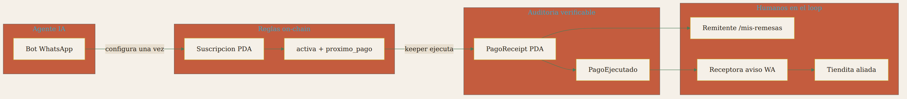
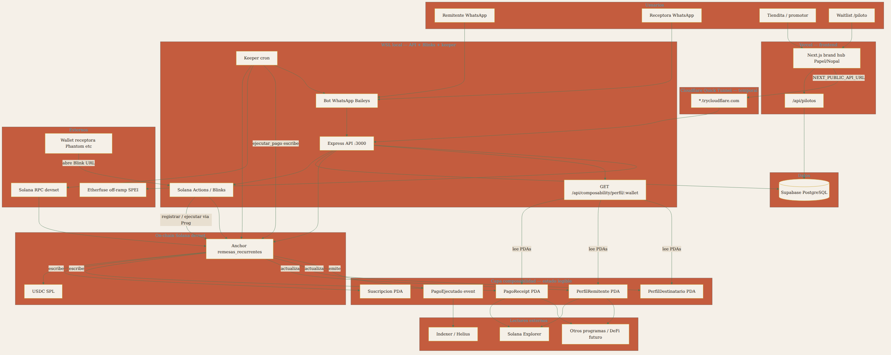
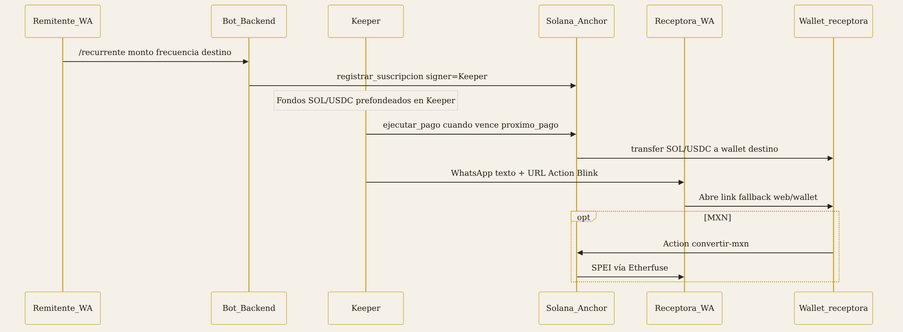
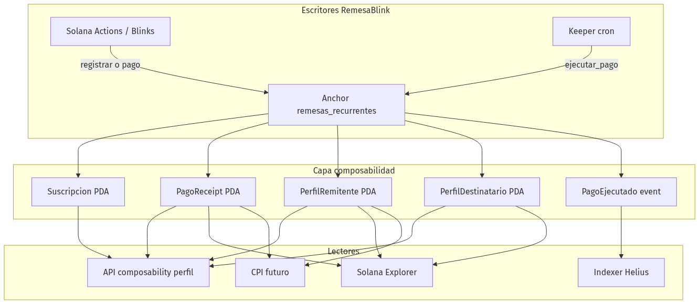
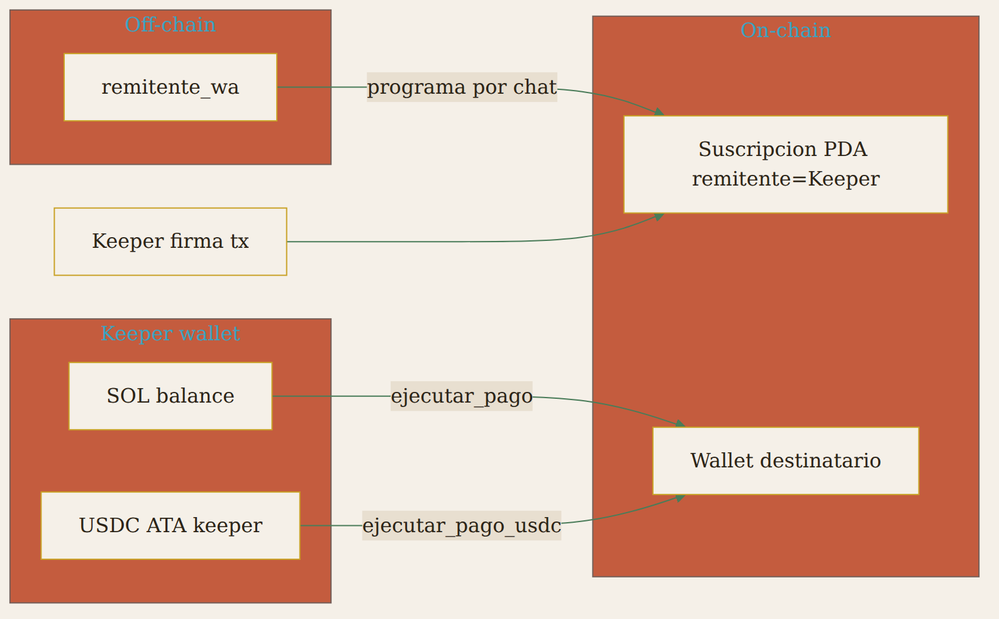
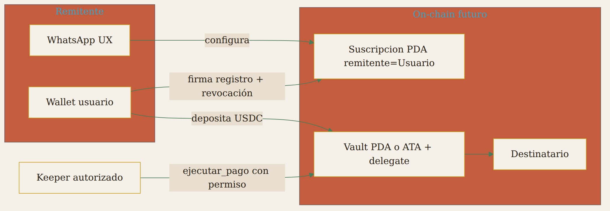
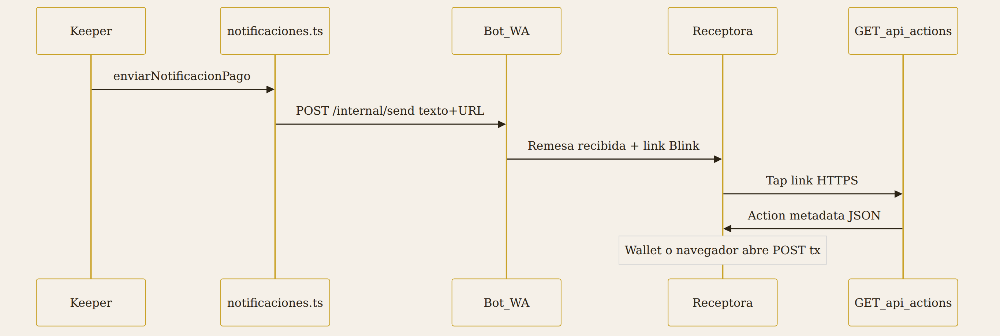
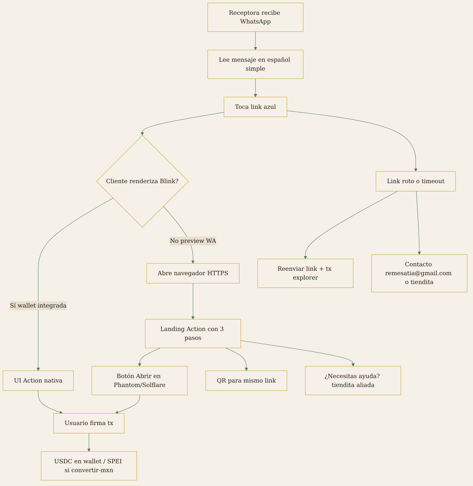
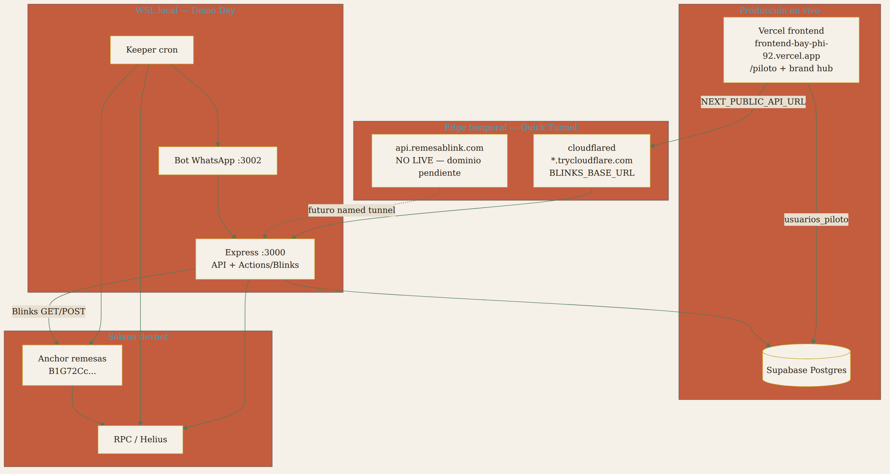

Dollars in / Pesos en casa
| Proyecto | RemesaBlink (Remesa Blink) |
|---|---|
| Documento | Arquitectura On/Off-Chain — M3 |
| Founder | Edgadafi |
| Contacto | quierochiachida@gmail.com |
| Fecha entrega M3 | 10 de julio de 2026 |
| Program ID | B1G72CcRGHYc1UpG4o51VrJySLiwm3d7tCHbQiSb5vZ2 |
| Mentor WayLearn | Diana Torres e Isaac Klassen |
| Repositorio | https://github.com/Edgadafi/remesa-blink |
| Clasificación | Confidencial |
RemesaBlink combina UX off-chain (WhatsApp, landing, bot conversacional) con lógica financiera verificable on-chain (suscripciones Anchor, USDC/SOL, receipts y perfiles composables).
En el MVP de incubación (devnet) el modelo es custodial vía keeper: el remitente opera por WhatsApp sin wallet propia; una wallet operada por el equipo (keeper) prefondea SOL/USDC, registra la suscripción on-chain y ejecuta pagos recurrentes cuando vence proximo_pago.
No automatizamos la confianza ciega: automatizamos el envío, pero cada ciclo queda auditable on-chain y visible para la familia off-chain. Modelo alineado con MVPs de IA en pagos (capa de control humano + trazabilidad):
| Capa | Qué hace | Componente |
|---|---|---|
| Agente | Recibe intención en lenguaje natural; configura remesa recurrente | Bot WhatsApp + API |
| Reglas | Solo paga si activa y venció proximo_pago; monto y frecuencia en PDA |
Programa Anchor |
| Auditoría | Recibo inmutable por pago + evento indexable | PagoReceipt + PagoEjecutado |
| Humanos | Remitente consulta /mis-remesas; receptora recibe aviso WA; aliado explica el link |
Familia + tiendita |
Pitch (1 frase): El agente en WhatsApp programa; Solana audita; tu familia vigila.
Documento canónico del modelo de confianza: TRUST-MODEL.md. Esquema de cuentas: PDA-ACCOUNTS.md.

Este documento responde al feedback del mentor WayLearn (M1):


Blinks y el keeper escriben estado en el programa Anchor; otros clientes leen sin depender del mirror PostgreSQL. Esa capa es lo que hace el historial de remesas verificable y reutilizable (crédito/DeFi futuro, Explorer, indexers).

| Primitiva | Tipo | Rol |
|---|---|---|
Suscripcion / SuscripcionUsdc |
PDA | Calendario, monto, frecuencia, proximo_pago |
PagoEjecutado |
Evento | Indexación (Helius, backend) |
PagoReceipt |
PDA | Recibo inmutable por pago (nonce) |
PerfilRemitente / PerfilDestinatario |
PDA | Agregados de reputación por wallet |
Puente UX: GET /api/composability/perfil/:wallet lee PDAs vía RPC y opcionalmente el mirror pagos. Source of truth = on-chain.
Detalle técnico (seeds, CPI, identidad usuario_remitente): COMPOSABILITY.md · PDA-ACCOUNTS.md
| Pregunta | MVP custodial (devnet, hoy) | Objetivo Fase E (post Demo Day) |
|---|---|---|
| ¿Quién prefondea? | Keeper (wallet operada por el equipo) | Wallet del remitente (vault PDA o ATA propia) |
| ¿El programa retiene fondos? | No — no hay escrow PDA en el programa | Opcional: vault PDA con reglas de retiro |
| ¿Delegación SPL / approve USDC? | No en MVP | Sí — delegación limitada o approve revocable |
| ¿Quién firma cada envío? | Keeper (ejecutar_pago / ejecutar_pago_usdc) |
Keeper con permiso on-chain; usuario no firma cada ciclo |
| ¿Quién firma el alta de suscripción? | Keeper como remitente en PDA |
Usuario como remitente signer |
| ¿Remitente WhatsApp usa wallet? | No (identidad off-chain remitente_wa) |
Wallet propia o smart wallet abstracted |
| ¿Identidad composable? | Campo usuario_remitente en PDA (perfil/receipt) |
Misma wallet = authority económica |

Reglas on-chain en cada ciclo:
suscripcion.activa == trueClock >= suscripcion.proximo_pagoPagoReceipt, actualización de perfiles, evento PagoEjecutadoLo que NO es el MVP: débito automático firmado por el usuario cada quincena; escrow custodial en smart contract; delegación Token-2022.

Roadmap detallado: FASE-E-NO-CUSTODIAL.md
| Dimensión | MVP (M3–M5) | Fase E |
|---|---|---|
| Riesgo operacional | Liquidez keeper; rotación de keys | Riesgo distribuido al usuario |
| UX remitente | Máxima simplicidad (solo WA) | Wallet o abstracción |
| Compliance | Validación piloto; no mainnet sin legal | NMLS / MSB según asesoría |
| Composabilidad | usuario_remitente ≠ authority fondos |
usuario_remitente = authority |
| Demo Day | Honesto: “custodial devnet” | Narrativa migración documentada |
WhatsApp no renderiza Solana Blinks como Dialect, Phantom o X. La receptora recibe un mensaje de texto con URL (Action HTTP).

URLs generadas por keeper (backend/src/keeper/cron.ts):
| Condición | URL Action |
|---|---|
| USDC + KYC Etherfuse verified | /api/actions/convertir-mxn?amount= |
| USDC sin KYC | /api/actions/enviar-remesa-usdc + onboarding /api/actions/onboarding-mxn |
| SOL | /api/actions/enviar-remesa?amount=&destination= |

UX confianza: pending / confirmed / failed diseñados — ver UX-TRUST-DESIGN.md (sesión Pauline Moon, WayLearn jul 2026).
Mensaje principal (post-pago):
*Remesa recibida*
Recibiste {monto} {USDC|SOL} de tu familia.
1️⃣ Toca el link de abajo
2️⃣ Se abre una página segura
3️⃣ Confirma en tu app de wallet (Phantom u otra)
🔗 {blinkUrl}
Si onboarding MXN pendiente:
📋 Para recibir pesos en tu cuenta (SPEI), primero completa tu registro:
{onboardingUrl}
Fallback humano:
Si el link no abre, escribe a la tiendita que te refirió o a remesatia@gmail.com
con tu número. Te reenviamos el paso a paso.
| Elemento | Estado |
|---|---|
| Notificación WA con URL | ✅ Implementado |
| Actions GET/POST backend | ✅ Implementado + tests |
| Página intermedia 3 pasos (web) | 📋 M4 — UX receptora |
| Deep link Phantom / Solflare | 📋 M4 |
| Reenvío automático link caído | 📋 M5 |
| Demo en dispositivo real WA | 📋 M5 Demo Day |
| Componente | Stack | Responsabilidad |
|---|---|---|
anchor/remesas_recurrentes |
Rust / Anchor 0.32 | Suscripciones, pagos, receipts, perfiles |
backend/ Express |
Node | API REST, Blinks Actions, keeper cron, Solana client |
bot/ Baileys |
Node | WhatsApp usuario + /internal/send |
frontend/ Next.js |
React | Brand hub + /piloto waitlist, UI suscripciones |
| Supabase | PostgreSQL | Mirror off-chain, usuarios_piloto, RLS |
| Vercel | Hosting | Frontend prod (frontend-bay-phi-92.vercel.app) |
| Cloudflare Quick Tunnel | Tunnel temporal | Expone Express :3000 vía *.trycloudflare.com |
| Etherfuse | API | Off-ramp MXN / KYC |
Fuente canónica (tabla extendida, gaps G1–G10, seeds PDA): PDA-ACCOUNTS.md §7.
| Dato | Source of truth | Mirror off-chain |
| Suscripción activa, monto, schedule | PDA on-chain | suscripciones (PG) |
| Pago ejecutado | PagoReceipt + evento | pagos (PG) |
| Perfil reputación | PDA perfil | GET /api/composability/perfil/:wallet |
| Waitlist piloto | usuarios_piloto (PG) | — |
| Cashback promocional | PG + futuro reward_system | — |
Estado Demo Day (jul 2026): frontend en Vercel; API + Blinks + keeper en WSL local expuestos con Cloudflare Quick Tunnel (*.trycloudflare.com). El hostname fijo api.remesablink.com es aspiracional — remesablink.com aún no está registrado (NXDOMAIN). Ver CLOUDFLARE-TUNNEL.md.

| Servicio | URL / notas |
|---|---|
| Landing piloto | https://frontend-bay-phi-92.vercel.app/piloto |
| Frontend (Vercel) | https://frontend-bay-phi-92.vercel.app |
| Backend + Blinks | Cloudflare Quick Tunnel → Express :3000 (BLINKS_BASE_URL = *.trycloudflare.com) |
| Named API (pendiente) | api.remesablink.com — no live; remesablink.com NXDOMAIN |
| DB | Supabase Postgres (usuarios_piloto, mirror suscripciones/pagos) |
| Program (devnet) | B1G72CcRGHYc1UpG4o51VrJySLiwm3d7tCHbQiSb5vZ2 |
| Explorer | https://explorer.solana.com/?cluster=devnet |
Tabla consolidada para revisión antes del desarrollo fuerte del MVP (M4–M5). Prioridad: lo que puede romper la demo E2E o la narrativa ante mentores e inversores.
| # | Riesgo | Área | Impacto en MVP | Mitigación | Estado |
|---|---|---|---|---|---|
| R1 | Custodia keeper — liquidez SOL/USDC, rotación de keys, concentración operacional | On-chain / ops | Demo falla si keeper sin fondos; narrativa “no custodial” no aplica en devnet | Preflight keeper:smoke + balance USDC; documentar Fase E (FASE-E-NO-CUSTODIAL.md); keys en .env nunca en repo |
Activo (devnet) |
| R2 | WhatsApp no renderiza Blinks — solo URL en texto | UX off-chain | Receptora no crypto-native no entiende el link | Copy español simple (§4.4); landing 3 pasos + QR (M4); árbol fallback §4.3 | Parcial — M4 UX |
| R3 | Receptora sin wallet o no abre link | UX | E2E se corta después del pago on-chain | Deep link Phantom/Solflare (M4); aliado tiendita; reenvío link + explorer (M5) | Pendiente M4/M5 |
| R4 | Etherfuse / KYC SPEI | API externa | No convierte USDC → MXN en piloto | Flujo demo USDC en wallet; onboarding KYC documentado; MXN como fase 2 | Piloto |
| R5 | Desincronía PG vs chain | Datos | UI/backend muestran estado incorrecto | Source of truth on-chain para finanzas (§6); sync keeper post-tx; no confiar solo en mirror | Monitorear |
| R6 | Backend/bot en local + Quick Tunnel | Infra | Demo inestable fuera de laptop; URL *.trycloudflare.com rota al reiniciar |
npm run dev:tunnel; named tunnel api.remesablink.com cuando haya dominio (CLOUDFLARE-TUNNEL.md); roadmap Render |
Demo local |
| R7 | RPC devnet gratuito | Solana | Timeouts, tx no confirmadas en demo | Retry + simulate; Helius/QuickNode antes de eventos críticos | Bajo |
| R8 | Baileys / sesión WhatsApp | Bot | Ban o desconexión = sin canal remitente | Sesión dedicada piloto; fallback email/llamada; no escalar spam | Piloto |
| R9 | Mainnet sin marco legal | Compliance | Bloqueo comercial, grants, alianzas | No mainnet sin asesoría NMLS/MSB; honesto en pitch: “custodial devnet” | Post Demo Day |
| R10 | Keeper como remitente en PDA |
Composabilidad | Perfiles/receipts no reflejan wallet real del usuario | Campo usuario_remitente en PDA; migración Fase E con usuario signer |
Aceptado MVP |
reward_system desde ejecutar_pago| Evidencia | Ubicación |
|---|---|
| Este documento | docs/ARCHITECTURE-M3.md |
| PDF export | docs/M3-evidencias/RemesaBlink-Architecture-M3.pdf |
| Composabilidad | docs/COMPOSABILITY.md |
| Tests Blinks | backend/tests/blinks.test.ts |
| Program Rust | anchor/remesas_recurrentes/programs/.../lib.rs |
| Diagramas PNG | docs/M3-evidencias/diagrams/m3-01-*.png … m3-09-*.png (incluye capa composabilidad) |
| Esquema PDAs | PDA-ACCOUNTS.md |
| Modelo confianza | TRUST-MODEL.md |
WayLearn Solana Latam Labs · RemesaBlink · Arquitectura M3 · Julio 2026